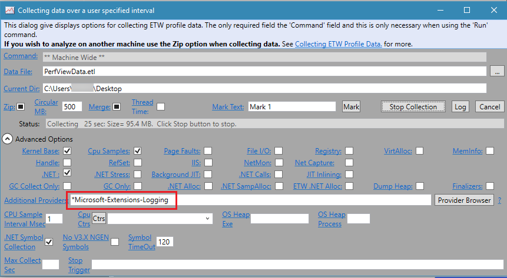
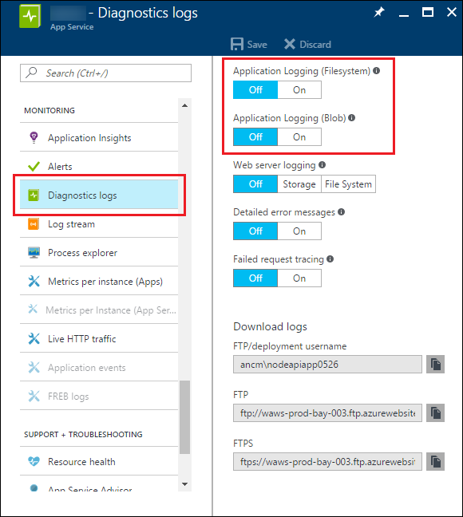

Introduction to Logging in ASP.NET Core
By Steve Smith and Tom Dykstra
ASP.NET Core supports a logging API that works with a variety of logging providers. Built-in providers let you send logs to one or more destinations, and you can plug in a third-party logging framework. This article shows how to use the built-in logging API and providers in your code.
How to create logs
To create logs, get an ILogger object from the dependency injection container:
public class TodoController : Controller
{
private readonly ITodoRepository _todoRepository;
private readonly ILogger _logger;
public TodoController(ITodoRepository todoRepository,
ILogger<TodoController> logger)
{
_todoRepository = todoRepository;
_logger = logger;
}
Then call logging methods on that logger object:
public IActionResult GetById(string id)
{
_logger.LogInformation(LoggingEvents.GetItem, "Getting item {ID}", id);
var item = _todoRepository.Find(id);
if (item == null)
{
_logger.LogWarning(LoggingEvents.GetItemNotFound, "GetById({ID}) NOT FOUND", id);
return NotFound();
}
return new ObjectResult(item);
}
This example creates logs with the TodoController class as the category. Categories are explained later in this article.
ASP.NET Core does not provide async logger methods because logging should be so fast that it isn't worth the cost of using async. If you're in a situation where that's not true, consider changing the way you log. If your data store is slow, write the log messages to a fast store first, then move them to a slow store later. For example, log to a message queue that is read and persisted to slow storage by another process.
How to add providers
A logging provider takes the messages that you create with an ILogger object and displays or stores them. For example, the Console provider displays messages on the console, and the Azure App Service provider can store them in Azure blob storage.
To use a provider, call the provider's Add<ProviderName> extension method in Program.cs:
public static void Main(string[] args)
{
var webHost = new WebHostBuilder()
.UseKestrel()
.UseContentRoot(Directory.GetCurrentDirectory())
.ConfigureAppConfiguration((hostingContext, config) =>
{
var env = hostingContext.HostingEnvironment;
config.AddJsonFile("appsettings.json", optional: true, reloadOnChange: true)
.AddJsonFile($"appsettings.{env.EnvironmentName}.json", optional: true, reloadOnChange: true);
config.AddEnvironmentVariables();
})
.ConfigureLogging((hostingContext, logging) =>
{
logging.AddConfiguration(hostingContext.Configuration.GetSection("Logging"));
logging.AddConsole();
logging.AddDebug();
})
.UseStartup<Startup>()
.Build();
webHost.Run();
}
The default project template sets up logging the way you see it in the preceding code, but the ConfigureLogging call is done by the CreateDefaultBuilder method. Here's the code in Program.cs that is created by project templates:
public static void Main(string[] args)
{
BuildWebHost(args).Run();
}
public static IWebHost BuildWebHost(string[] args) =>
WebHost.CreateDefaultBuilder(args)
.UseStartup<Startup>()
.Build();
You'll find information about each built-in logging provider and links to third-party logging providers later in the article.
Sample logging output
With the sample code shown in the preceding section, you'll see logs in the console when you run from the command line. Here's an example of console output:
info: Microsoft.AspNetCore.Hosting.Internal.WebHost[1]
Request starting HTTP/1.1 GET http://localhost:5000/api/todo/0
info: Microsoft.AspNetCore.Mvc.Internal.ControllerActionInvoker[1]
Executing action method TodoApi.Controllers.TodoController.GetById (TodoApi) with arguments (0) - ModelState is Valid
info: TodoApi.Controllers.TodoController[1002]
Getting item 0
warn: TodoApi.Controllers.TodoController[4000]
GetById(0) NOT FOUND
info: Microsoft.AspNetCore.Mvc.StatusCodeResult[1]
Executing HttpStatusCodeResult, setting HTTP status code 404
info: Microsoft.AspNetCore.Mvc.Internal.ControllerActionInvoker[2]
Executed action TodoApi.Controllers.TodoController.GetById (TodoApi) in 42.9286ms
info: Microsoft.AspNetCore.Hosting.Internal.WebHost[2]
Request finished in 148.889ms 404
These logs were created by going to http://localhost:5000/api/todo/0, which triggers execution of both ILogger calls shown in the preceding section.
Here's an example of the same logs as they appear in the Debug window when you run the sample application in Visual Studio:
Microsoft.AspNetCore.Hosting.Internal.WebHost:Information: Request starting HTTP/1.1 GET http://localhost:53104/api/todo/0
Microsoft.AspNetCore.Mvc.Internal.ControllerActionInvoker:Information: Executing action method TodoApi.Controllers.TodoController.GetById (TodoApi) with arguments (0) - ModelState is Valid
TodoApi.Controllers.TodoController:Information: Getting item 0
TodoApi.Controllers.TodoController:Warning: GetById(0) NOT FOUND
Microsoft.AspNetCore.Mvc.StatusCodeResult:Information: Executing HttpStatusCodeResult, setting HTTP status code 404
Microsoft.AspNetCore.Mvc.Internal.ControllerActionInvoker:Information: Executed action TodoApi.Controllers.TodoController.GetById (TodoApi) in 152.5657ms
Microsoft.AspNetCore.Hosting.Internal.WebHost:Information: Request finished in 316.3195ms 404
The logs that were created by the ILogger calls shown in the preceding section begin with "TodoApi.Controllers.TodoController". The logs that begin with "Microsoft" categories are from ASP.NET Core. ASP.NET Core itself and your application code are using the same logging API and the same logging providers.
The remainder of this article explains some details and options for logging.
NuGet packages
The ILogger and ILoggerFactory interfaces are in Microsoft.Extensions.Logging.Abstractions, and default implementations for them are in Microsoft.Extensions.Logging.
Log category
A category is included with each log that you create. You specify the category when you create an ILogger object. The category may be any string, but a convention is to use the fully qualified name of the class from which the logs are written. For example: "TodoApi.Controllers.TodoController".
You can specify the category as a string or use an extension method that derives the category from the type. To specify the category as a string, call CreateLogger on an ILoggerFactory instance, as shown below.
public class TodoController : Controller
{
private readonly ITodoRepository _todoRepository;
private readonly ILogger _logger;
public TodoController(ITodoRepository todoRepository,
ILoggerFactory logger)
{
_todoRepository = todoRepository;
_logger = logger.CreateLogger("TodoApi.Controllers.TodoController");
}
Most of the time, it will be easier to use ILogger<T>, as in the following example.
public class TodoController : Controller
{
private readonly ITodoRepository _todoRepository;
private readonly ILogger _logger;
public TodoController(ITodoRepository todoRepository,
ILogger<TodoController> logger)
{
_todoRepository = todoRepository;
_logger = logger;
}
This is equivalent to calling CreateLogger with the fully qualified type name of T.
Log level
Each time you write a log, you specify its LogLevel. The log level indicates the degree of severity or importance. For example, you might write an Information log when a method ends normally, a Warning log when a method returns a 404 return code, and an Error log when you catch an unexpected exception.
In the following code example, the names of the methods (for example, LogWarning) specify the log level. The first parameter is the Log event ID (explained later in this article). The remaining parameters construct a log message string.
public IActionResult GetById(string id)
{
_logger.LogInformation(LoggingEvents.GetItem, "Getting item {ID}", id);
var item = _todoRepository.Find(id);
if (item == null)
{
_logger.LogWarning(LoggingEvents.GetItemNotFound, "GetById({ID}) NOT FOUND", id);
return NotFound();
}
return new ObjectResult(item);
}
Log methods that include the level in the method name are extension methods for ILogger. Behind the scenes, these methods call a Log method that takes a LogLevel parameter. You can call the Log method directly rather than one of these extension methods, but the syntax is relatively complicated. For more information, see the ILogger interface and the logger extensions source code.
ASP.NET Core defines the following log levels, ordered here from least to highest severity.
Trace = 0
For information that is valuable only to a developer debugging an issue. These messages may contain sensitive application data and so should not be enabled in a production environment. Disabled by default. Example:
Credentials: {"User":"someuser", "Password":"P@ssword"}Debug = 1
For information that has short-term usefulness during development and debugging. Example:
Entering method Configure with flag set to true.You typically would not enableDebuglevel logs in production unless you are troubleshooting, due to the high volume of logs.Information = 2
For tracking the general flow of the application. These logs typically have some long-term value. Example:
Request received for path /api/todoWarning = 3
For abnormal or unexpected events in the application flow. These may include errors or other conditions that do not cause the application to stop, but which may need to be investigated. Handled exceptions are a common place to use the
Warninglog level. Example:FileNotFoundException for file quotes.txt.Error = 4
For errors and exceptions that cannot be handled. These messages indicate a failure in the current activity or operation (such as the current HTTP request), not an application-wide failure. Example log message:
Cannot insert record due to duplicate key violation.Critical = 5
For failures that require immediate attention. Examples: data loss scenarios, out of disk space.
You can use the log level to control how much log output is written to a particular storage medium or display window. For example, in production you might want all logs of Information level and lower to go to a volume data store, and all logs of Warning level and higher to go to a value data store. During development, you might normally send logs of Warning or higher severity to the console. Then when you need to troubleshoot, you can add Debug level. The Log filtering section later in this article explains how to control which log levels a provider handles.
The ASP.NET Core framework writes Debug level logs for framework events. The log examples earlier in this article excluded logs below Information level, so no Debug level logs were shown. Here's an example of console logs if you run the sample application configured to show Debug and higher logs for the console provider.
info: Microsoft.AspNetCore.Hosting.Internal.WebHost[1]
Request starting HTTP/1.1 GET http://localhost:62555/api/todo/0
dbug: Microsoft.AspNetCore.Routing.Tree.TreeRouter[1]
Request successfully matched the route with name 'GetTodo' and template 'api/Todo/{id}'.
dbug: Microsoft.AspNetCore.Mvc.Internal.ActionSelector[2]
Action 'TodoApi.Controllers.TodoController.Update (TodoApi)' with id '089d59b6-92ec-472d-b552-cc613dfd625d' did not match the constraint 'Microsoft.AspNetCore.Mvc.Internal.HttpMethodActionConstraint'
dbug: Microsoft.AspNetCore.Mvc.Internal.ActionSelector[2]
Action 'TodoApi.Controllers.TodoController.Delete (TodoApi)' with id 'f3476abe-4bd9-4ad3-9261-3ead09607366' did not match the constraint 'Microsoft.AspNetCore.Mvc.Internal.HttpMethodActionConstraint'
dbug: Microsoft.AspNetCore.Mvc.Internal.ControllerActionInvoker[1]
Executing action TodoApi.Controllers.TodoController.GetById (TodoApi)
info: Microsoft.AspNetCore.Mvc.Internal.ControllerActionInvoker[1]
Executing action method TodoApi.Controllers.TodoController.GetById (TodoApi) with arguments (0) - ModelState is Valid
info: TodoApi.Controllers.TodoController[1002]
Getting item 0
warn: TodoApi.Controllers.TodoController[4000]
GetById(0) NOT FOUND
dbug: Microsoft.AspNetCore.Mvc.Internal.ControllerActionInvoker[2]
Executed action method TodoApi.Controllers.TodoController.GetById (TodoApi), returned result Microsoft.AspNetCore.Mvc.NotFoundResult.
info: Microsoft.AspNetCore.Mvc.StatusCodeResult[1]
Executing HttpStatusCodeResult, setting HTTP status code 404
info: Microsoft.AspNetCore.Mvc.Internal.ControllerActionInvoker[2]
Executed action TodoApi.Controllers.TodoController.GetById (TodoApi) in 0.8788ms
dbug: Microsoft.AspNetCore.Server.Kestrel[9]
Connection id "0HL6L7NEFF2QD" completed keep alive response.
info: Microsoft.AspNetCore.Hosting.Internal.WebHost[2]
Request finished in 2.7286ms 404
Log event ID
Each time you write a log, you can specify an event ID. The sample app does this by using a locally-defined LoggingEvents class:
public IActionResult GetById(string id)
{
_logger.LogInformation(LoggingEvents.GetItem, "Getting item {ID}", id);
var item = _todoRepository.Find(id);
if (item == null)
{
_logger.LogWarning(LoggingEvents.GetItemNotFound, "GetById({ID}) NOT FOUND", id);
return NotFound();
}
return new ObjectResult(item);
}
public class LoggingEvents
{
public const int GenerateItems = 1000;
public const int ListItems = 1001;
public const int GetItem = 1002;
public const int InsertItem = 1003;
public const int UpdateItem = 1004;
public const int DeleteItem = 1005;
public const int GetItemNotFound = 4000;
public const int UpdateItemNotFound = 4001;
}
An event ID is an integer value that you can use to associate a set of logged events with one another. For instance, a log for adding an item to a shopping cart could be event ID 1000 and a log for completing a purchase could be event ID 1001.
In logging output, the event ID may be stored in a field or included in the text message, depending on the provider. The Debug provider doesn't show event IDs, but the console provider shows them in brackets after the category:
info: TodoApi.Controllers.TodoController[1002]
Getting item invalidid
warn: TodoApi.Controllers.TodoController[4000]
GetById(invalidid) NOT FOUND
Log message format string
Each time you write a log, you provide a text message. The message string can contain named placeholders into which argument values are placed, as in the following example:
public IActionResult GetById(string id)
{
_logger.LogInformation(LoggingEvents.GetItem, "Getting item {ID}", id);
var item = _todoRepository.Find(id);
if (item == null)
{
_logger.LogWarning(LoggingEvents.GetItemNotFound, "GetById({ID}) NOT FOUND", id);
return NotFound();
}
return new ObjectResult(item);
}
The order of placeholders, not their names, determines which parameters are used for them. For example, if you have the following code:
string p1 = "parm1";
string p2 = "parm2";
_logger.LogInformation("Parameter values: {p2}, {p1}", p1, p2);
The resulting log message would look like this:
Parameter values: parm1, parm2
The logging framework does message formatting in this way to make it possible for logging providers to implement semantic logging, also known as structured logging. Because the arguments themselves are passed to the logging system, not just the formatted message string, logging providers can store the parameter values as fields in addition to the message string. For example, if you are directing your log output to Azure Table Storage, and your logger method call looks like this:
_logger.LogInformation("Getting item {ID} at {RequestTime}", id, DateTime.Now);
Each Azure Table entity could have ID and RequestTime properties, which would simplify queries on log data. You could find all logs within a particular RequestTime range, without having to parse the time out of the text message.
Logging exceptions
The logger methods have overloads that let you pass in an exception, as in the following example:
catch (Exception ex)
{
_logger.LogWarning(LoggingEvents.GetItemNotFound, ex, "GetById({ID}) NOT FOUND", id);
return NotFound();
}
return new ObjectResult(item);
Different providers handle the exception information in different ways. Here's an example of Debug provider output from the code shown above.
TodoApi.Controllers.TodoController:Warning: GetById(036dd898-fb01-47e8-9a65-f92eb73cf924) NOT FOUND
System.Exception: Item not found exception.
at TodoApi.Controllers.TodoController.GetById(String id) in C:\logging\sample\src\TodoApi\Controllers\TodoController.cs:line 226
Log filtering
You can specify a minimum log level for a specific provider and category or for all providers or all categories. Any logs below the minimum level aren't passed to that provider, so they don't get displayed or stored.
If you want to suppress all logs, you can specify LogLevel.None as the minimum log level. The integer value of LogLevel.None is 6, which is higher than LogLevel.Critical (5).
Create filter rules in configuration
The project templates create code that calls CreateDefaultBuilder to set up logging for the Console and Debug providers. The CreateDefaultBuilder method also sets up logging to look for configuration in a Logging section, using code like the following:
public static void Main(string[] args)
{
var webHost = new WebHostBuilder()
.UseKestrel()
.UseContentRoot(Directory.GetCurrentDirectory())
.ConfigureAppConfiguration((hostingContext, config) =>
{
var env = hostingContext.HostingEnvironment;
config.AddJsonFile("appsettings.json", optional: true, reloadOnChange: true)
.AddJsonFile($"appsettings.{env.EnvironmentName}.json", optional: true, reloadOnChange: true);
config.AddEnvironmentVariables();
})
.ConfigureLogging((hostingContext, logging) =>
{
logging.AddConfiguration(hostingContext.Configuration.GetSection("Logging"));
logging.AddConsole();
logging.AddDebug();
})
.UseStartup<Startup>()
.Build();
webHost.Run();
}
The configuration data specifies minimum log levels by provider and category, as in the following example:
{
"Logging": {
"IncludeScopes": false,
"Debug": {
"LogLevel": {
"Default": "Information"
}
},
"Console": {
"LogLevel": {
"Microsoft.AspNetCore.Mvc.Razor.Internal": "Warning",
"Microsoft.AspNetCore.Mvc.Razor.Razor": "Debug",
"Microsoft.AspNetCore.Mvc.Razor": "Error",
"Default": "Information"
}
},
"LogLevel": {
"Default": "Debug"
}
}
}
This JSON creates six filter rules, one for the Debug provider, four for the Console provider, and one that applies to all providers. You'll see later how just one of these rules is chosen for each provider when an ILogger object is created.
Filter rules in code
You can register filter rules in code, as shown in the following example:
WebHost.CreateDefaultBuilder(args)
.UseStartup<Startup>()
.ConfigureLogging(logging =>
logging.AddFilter("System", LogLevel.Debug)
.AddFilter<DebugLoggerProvider>("Microsoft", LogLevel.Trace))
.Build();
The second AddFilter specifies the Debug provider by using its type name. The first AddFilter applies to all providers because it doesn't specify a provider type.
How filtering rules are applied
The configuration data and the AddFilter code shown in the preceding examples create the rules shown in the following table. The first six come from the configuration example and the last two come from the code example.
| Number | Provider | Categories that begin with | Minimum log level |
|---|---|---|---|
| 1 | Debug | All categories | Information |
| 2 | Console | Microsoft.AspNetCore.Mvc.Razor.Internal | Warning |
| 3 | Console | Microsoft.AspNetCore.Mvc.Razor.Razor | Debug |
| 4 | Console | Microsoft.AspNetCore.Mvc.Razor | Error |
| 5 | Console | All categories | Information |
| 6 | All providers | All categories | Debug |
| 7 | All providers | System | Debug |
| 8 | Debug | Microsoft | Trace |
When you create an ILogger object to write logs with, the ILoggerFactory object selects a single rule per provider to apply to that logger. All messages written by that ILogger object are filtered based on the selected rules. The most specific rule possible for each provider and category pair is selected from the available rules.
The following algorithm is used for each provider when an ILogger is created for a given category:
- Select all rules that match the provider or its alias. If none are found, select all rules with an empty provider.
- From the result of the preceding step, select rules with longest matching category prefix. If none are found, select all rules that don't specify a category.
- If multiple rules are selected take the last one.
- If no rules are selected, use
MinimumLevel.
For example, suppose you have the preceding list of rules and you create an ILogger object for category "Microsoft.AspNetCore.Mvc.Razor.RazorViewEngine":
- For the Debug provider, rules 1, 6, and 8 apply. Rule 8 is most specific, so that's the one selected.
- For the Console provider, rules 3, 4, 5, and 6 apply. Rule 3 is most specific.
When you create logs with an ILogger for category "Microsoft.AspNetCore.Mvc.Razor.RazorViewEngine", logs of Trace level and above will go to the Debug provider, and logs of Debug level and above will go to the Console provider.
Provider aliases
You can use the type name to specify a provider in configuration, but each provider defines a shorter alias that is easier to use. For the built-in providers, use the following aliases:
- Console
- Debug
- EventLog
- AzureAppServices
- TraceSource
- EventSource
Default minimum level
There is a minimum level setting that takes effect only if no rules from configuration or code apply for a given provider and category. The following example shows how to set the minimum level:
WebHost.CreateDefaultBuilder(args)
.UseStartup<Startup>()
.ConfigureLogging(logging => logging.SetMinimumLevel(LogLevel.Warning))
.Build();
IF you don't explicitly set the minimum level, the default value is Information, which means that Trace and Debug logs are ignored.
Filter functions
You can write code in a filter function to apply filtering rules. A filter function is invoked for all providers and categories that do not have rules assigned to them by configuration or code. Code in the function has access to the provider type, category, and log level to decide whether or not a message should be logged. For example:
WebHost.CreateDefaultBuilder(args)
.UseStartup<Startup>()
.ConfigureLogging(logBuilder =>
{
logBuilder.AddFilter((provider, category, logLevel) =>
{
if (provider == "Microsoft.Extensions.Logging.Console.ConsoleLoggerProvider" &&
category == "TodoApi.Controllers.TodoController")
{
return false;
}
return true;
});
})
.Build();
Log scopes
You can group a set of logical operations within a scope in order to attach the same data to each log that is created as part of that set. For example, you might want every log created as part of processing a transaction to include the transaction ID.
A scope is an IDisposable type that is returned by the ILogger.BeginScope<TState> method and lasts until it is disposed. You use a scope by wrapping your logger calls in a using block, as shown here:
public IActionResult GetById(string id)
{
TodoItem item;
using (_logger.BeginScope("Message attached to logs created in the using block"))
{
_logger.LogInformation(LoggingEvents.GetItem, "Getting item {ID}", id);
item = _todoRepository.Find(id);
if (item == null)
{
_logger.LogWarning(LoggingEvents.GetItemNotFound, "GetById({ID}) NOT FOUND", id);
return NotFound();
}
}
return new ObjectResult(item);
}
The following code enables scopes for the console provider:
In Program.cs:
.ConfigureLogging((hostingContext, logging) =>
{
logging.AddConfiguration(hostingContext.Configuration.GetSection("Logging"));
logging.AddConsole(options => options.IncludeScopes = true);
logging.AddDebug();
})
Each log message includes the scoped information:
info: TodoApi.Controllers.TodoController[1002]
=> RequestId:0HKV9C49II9CK RequestPath:/api/todo/0 => TodoApi.Controllers.TodoController.GetById (TodoApi) => Message attached to logs created in the using block
Getting item 0
warn: TodoApi.Controllers.TodoController[4000]
=> RequestId:0HKV9C49II9CK RequestPath:/api/todo/0 => TodoApi.Controllers.TodoController.GetById (TodoApi) => Message attached to logs created in the using block
GetById(0) NOT FOUND
Built-in logging providers
ASP.NET Core ships the following providers:
The console provider
The Microsoft.Extensions.Logging.Console provider package sends log output to the console.
logging.AddConsole()
The Debug provider
The Microsoft.Extensions.Logging.Debug provider package writes log output by using the System.Diagnostics.Debug class (Debug.WriteLine method calls).
On Linux, this provider writes logs to /var/log/message.
logging.AddDebug()
The EventSource provider
For apps that target ASP.NET Core 1.1.0 or higher, the Microsoft.Extensions.Logging.EventSource provider package can implement event tracing. On Windows, it uses ETW. The provider is cross-platform, but there are no event collection and display tools yet for Linux or macOS.
logging.AddEventSourceLogger()
A good way to collect and view logs is to use the PerfView utility. There are other tools for viewing ETW logs, but PerfView provides the best experience for working with the ETW events emitted by ASP.NET.
To configure PerfView for collecting events logged by this provider, add the string *Microsoft-Extensions-Logging to the Additional Providers list. (Don't miss the asterisk at the start of the string.)

Capturing events on Nano Server requires some additional setup:
Connect PowerShell remoting to the Nano Server:
Enter-PSSession [name]Create an ETW session:
New-EtwTraceSession -Name "MyAppTrace" -LocalFilePath C:\trace.etlAdd ETW providers for CLR, ASP.NET Core, and others as needed. The ASP.NET Core provider GUID is
3ac73b97-af73-50e9-0822-5da4367920d0.Add-EtwTraceProvider -Guid "{e13c0d23-ccbc-4e12-931b-d9cc2eee27e4}" -SessionName MyAppTrace Add-EtwTraceProvider -Guid "{3ac73b97-af73-50e9-0822-5da4367920d0}" -SessionName MyAppTraceRun the site and do whatever actions you want tracing information for.
Stop the tracing session when you're finished:
Stop-EtwTraceSession -Name "MyAppTrace"
The resulting C:\trace.etl file can be analyzed with PerfView as on other editions of Windows.
The Windows EventLog provider
The Microsoft.Extensions.Logging.EventLog provider package sends log output to the Windows Event Log.
logging.AddEventLog()
The TraceSource provider
The Microsoft.Extensions.Logging.TraceSource provider package uses the System.Diagnostics.TraceSource libraries and providers.
logging.AddTraceSource(sourceSwitchName);
AddTraceSource overloads let you pass in a source switch and a trace listener.
To use this provider, an application has to run on the .NET Framework (rather than .NET Core). The provider lets you route messages to a variety of listeners, such as the TextWriterTraceListener used in the sample application.
The following example configures a TraceSource provider that logs Warning and higher messages to the console window.
public void Configure(IApplicationBuilder app,
IHostingEnvironment env,
ILoggerFactory loggerFactory)
{
loggerFactory
.AddDebug();
// add Trace Source logging
var testSwitch = new SourceSwitch("sourceSwitch", "Logging Sample");
testSwitch.Level = SourceLevels.Warning;
loggerFactory.AddTraceSource(testSwitch,
new TextWriterTraceListener(writer: Console.Out));
The Azure App Service provider
The Microsoft.Extensions.Logging.AzureAppServices provider package writes logs to text files in an Azure App Service app's file system and to blob storage in an Azure Storage account. The provider is available only for apps that target ASP.NET Core 1.1.0 or higher.
Note
ASP.NET Core 2.0 is in preview. Apps created with the latest preview release may not run when deployed to Azure App Service. When ASP.NET Core 2.0 is released, Azure App Service will run 2.0 apps, and the Azure App Service provider will work as indicated here.
You don't have to install the provider package or call the AddAzureWebAppDiagnostics extension method. The provider is automatically available to your app when you deploy the app to Azure App Service.
When you deploy to an App Service app, your application honors the settings in the Diagnostic Logs section of the App Service page of the Azure portal. When you change those settings, the changes take effect immediately without requiring that you restart the app or redeploy code to it.

The default location for log files is in the D:\home\LogFiles\Application folder, and the default file name is diagnostics-yyyymmdd.txt. The default file size limit is 10 MB, and the default maximum number of files retained is 2. The default blob name is {app-name}{timestamp}/yyyy/mm/dd/hh/{guid}-applicationLog.txt. For more information about default behavior, see AzureAppServicesDiagnosticsSettings.
The provider only works when your project runs in the Azure environment. It has no effect when you run locally — it does not write to local files or local development storage for blobs.
Third-party logging providers
Here are some third-party logging frameworks that work with ASP.NET Core:
elmah.io - provider for the Elmah.Io service
JSNLog - logs JavaScript exceptions and other client-side events in your server-side log.
Loggr - provider for the Loggr service
NLog - provider for the NLog library
Serilog - provider for the Serilog library
Some third-party frameworks can do semantic logging, also known as structured logging.
Using a third-party framework is similar to using one of the built-in providers: add a NuGet package to your project and call an extension method on ILoggerFactory. For more information, see each framework's documentation.
You can create your own custom providers as well, to support other logging frameworks or your own logging requirements.